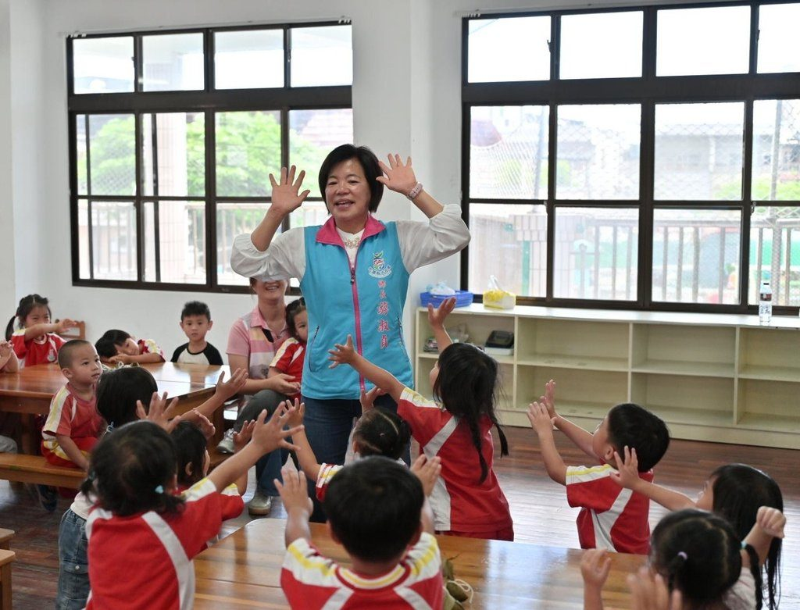

花蓮吉安老幼共學慶端陽 鄉長游淑貞攜手詩書畫協會深植傳統文化

可樂電子報小編/編輯
為弘揚端午傳統文化並深化基層美感與品格教育，花蓮縣吉安鄉公所攜手花蓮縣詩書畫協會，於吉安鄉立幼兒園舉辦「端午詩香粽香頌屈子」跨世代共學活動。吉安鄉長游淑貞特別到場與百餘位幼兒親切互動，透過老幼共融的溫馨氛圍，引導孩子在寓教於樂中領略節慶美學。

活動現場由花蓮縣詩書畫協會理事長陳光明帶領多位長者與會，不僅引領幼童們吟誦唐詩、認識愛國詩人屈原的歷史故事，更藉此機會推廣國學經典。鄉長游淑貞也在互動中，溫柔引導孩子理解生命教育與情緒排解的重要性，將良善品格悄然深植於幼兒心中。

最令幼童興奮的包粽體驗隨後登場，社區長輩們耐心示範捲粽葉、填料與綁繩等傳統手藝，大手牽小手共同完成一顆顆充滿童趣的粽子。現場粽香四溢且笑聲不斷，透過跨世代的五感體驗，不僅圓滿傳承了傳統歲時節慶，更建立起尊老愛幼的和諧社會氛圍。